t20 第 1 轮：停靠侧轨与展开列表
右边那一列留不留？
推荐方向一：头像一眼看到谁有未读、一下点过去，停靠与浮动是同一个样子；只是不再像单独的一条。
现在
停靠
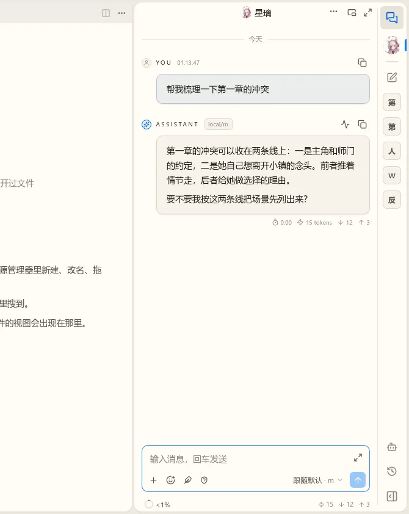
停靠展开
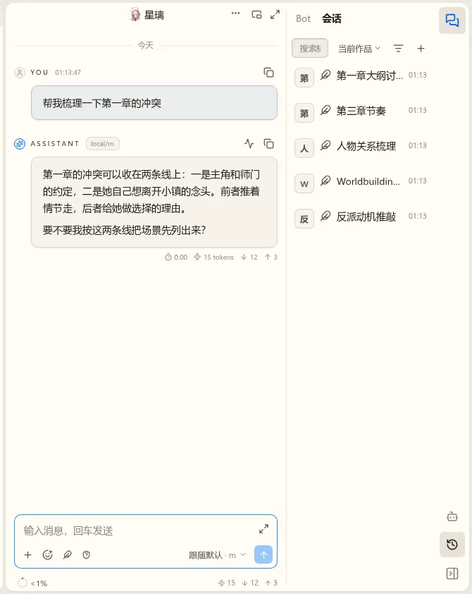
浮动
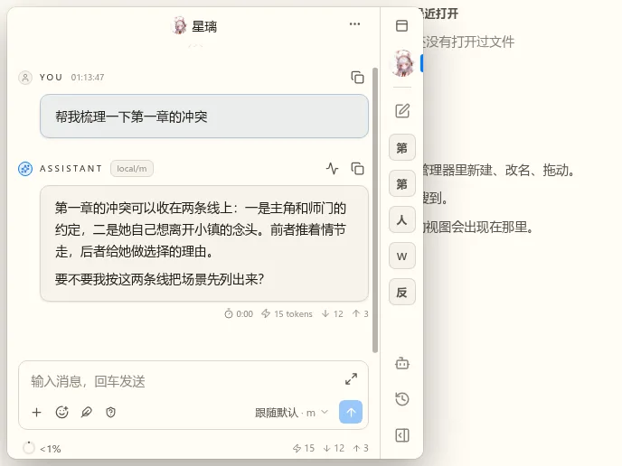
浮动展开
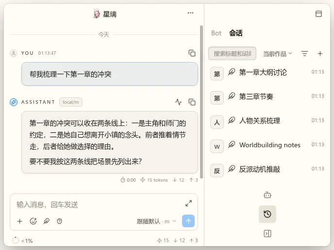
方向一：并进卡片的窄列
停靠
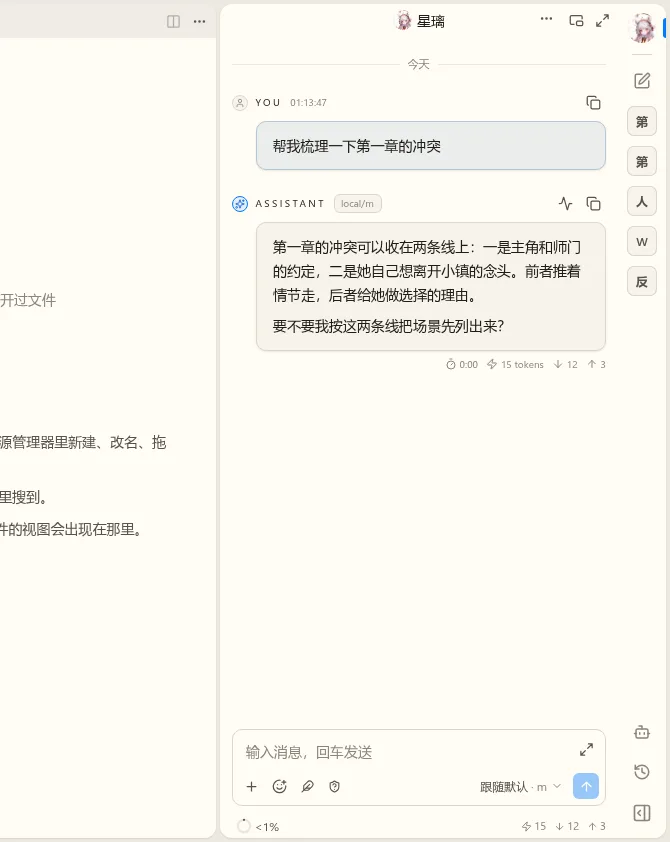
停靠展开
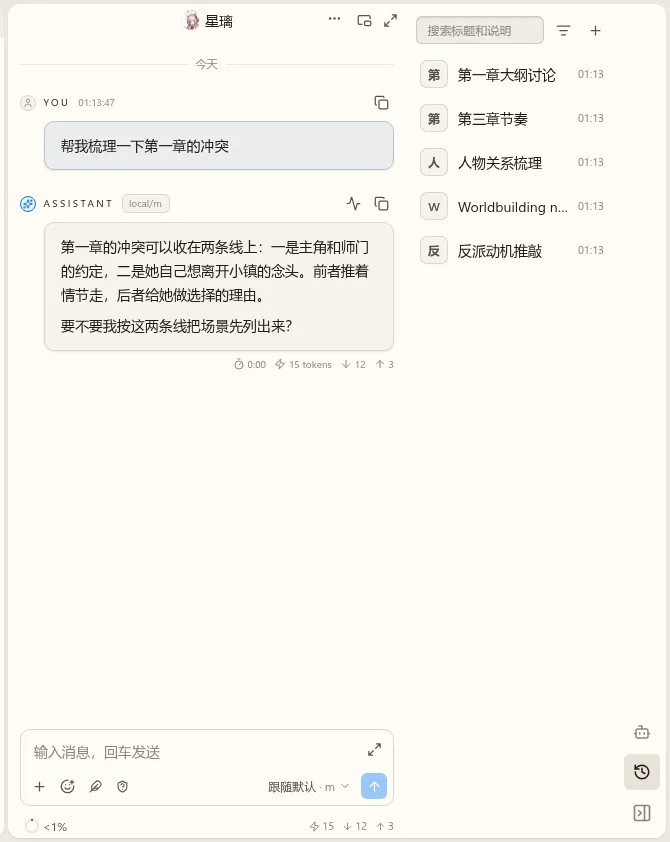
浮动

浮动展开
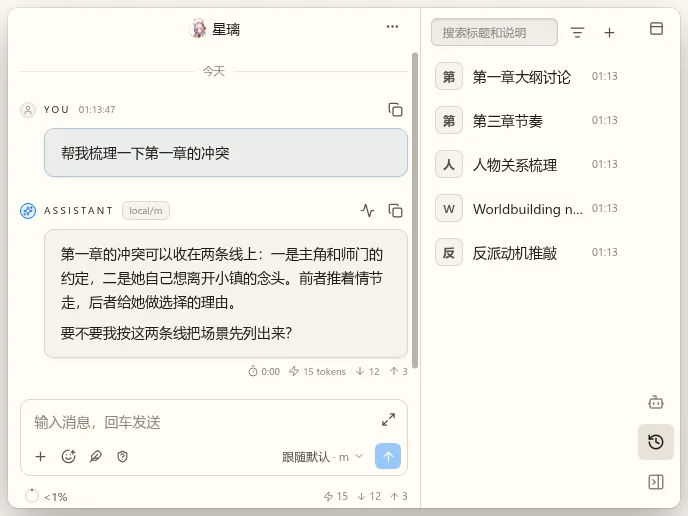
没有分隔线，右栏只有消息时不画顶上的容器入口。展开后列表上面没有页签，窄列底下的 bot、会话按钮就是页签；浮动窗展开也留着窄列，“回到停靠”在它顶上。
方向二：没有窄列，列表按需打开
停靠
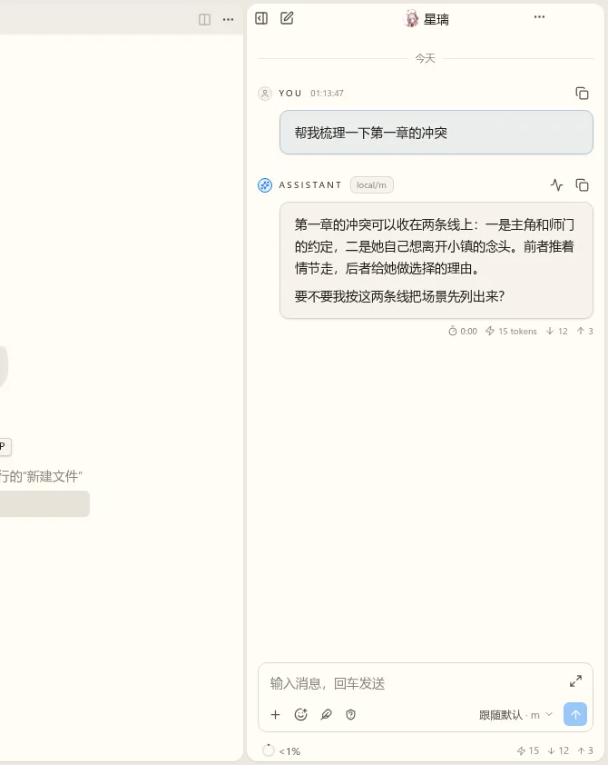
停靠展开
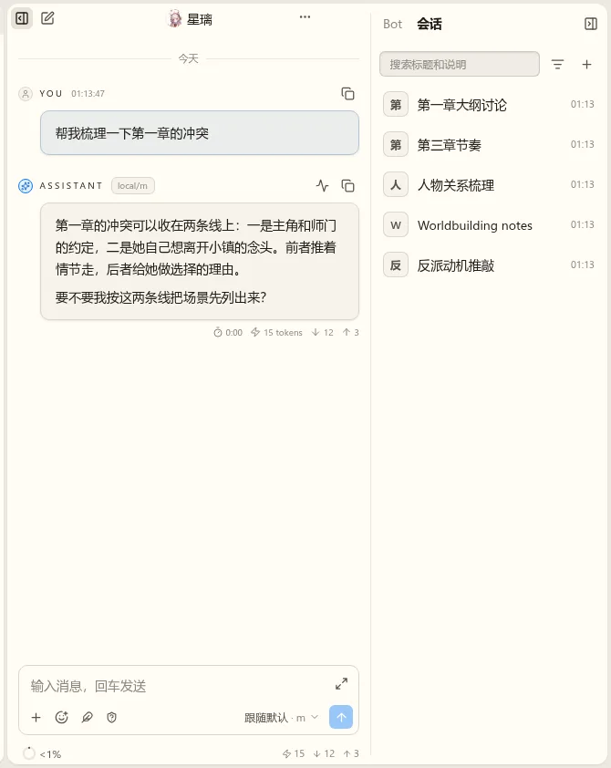
浮动
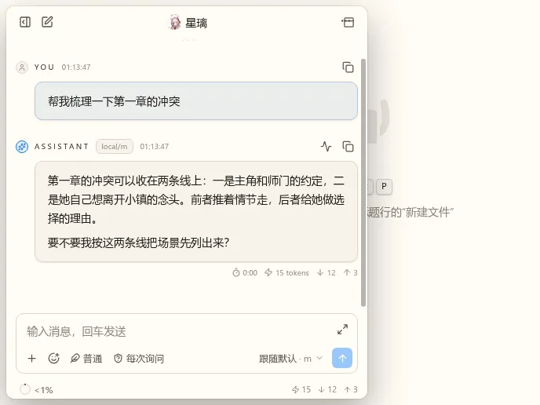
浮动展开
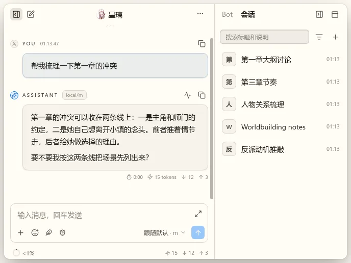
聊天头左上角两个按钮：打开列表、新对话。列表自带 Bot、会话页签与收起；浮动窗里页签和“回到停靠”同一行。未读只在打开列表的按钮上写总数。
列表行按右边这样改？
推荐改：会话用和窄列同样的首字方块，收着与展开对得上；当前项用描边标出，不再整行涂蓝。
现在
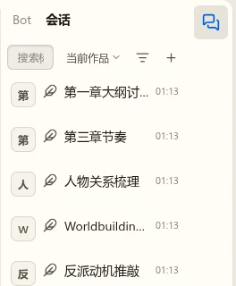
改后
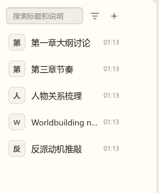
Bot 页
直接修，不用答
| 哪里 | 改成什么 |
|---|---|
| 会话页的搜索框 | 占满这一行（现在只有一截，提示文字被截断） |
| “当前作品 / 全部作品” | 挪进筛选菜单，筛选按钮上照旧写生效的个数 |
| 会话没有说明时 | 行只有一行高，不留空的第二行 |
已定
- 浮动窗展开着拖动不再变小；一列按钮对齐到同一条中线；轨宽手柄亮起时是细线（已修并合入）
- 归位后再浮动用上次的位置与大小（做，开发者 11-27 同意）